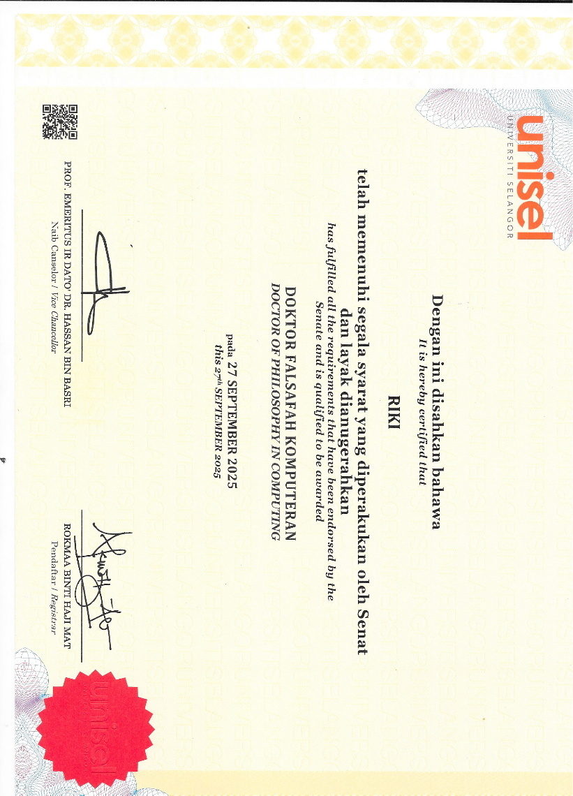

Ijazah S3Doctoral Diploma
Doctor of Philosophy in Computing
Dokumen doktoral dari Universiti Selangor sebagai puncak pendidikan formal.Doctoral document from Universiti Selangor as the highest formal education milestone.